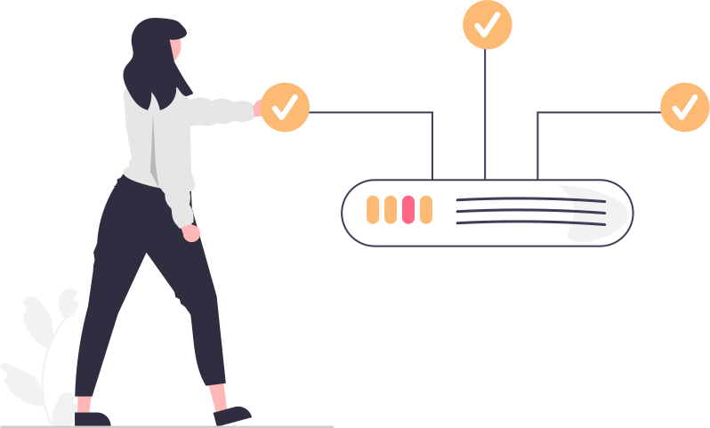

<section class="my-14" id="care-about">
    <div class="grid grid-cols-1 md:grid-cols-2 gap-x-14">
        <div class="hidden md:flex h-full items-center justify-center">
            
        </div>

        <div>
            <h2 class="mb-10 text-4xl text-gray-700 underline underline-offset-8 decoration-indigo-300 decoration-4">We care about</h2>
            <div class="my-5 pb-3 border-b border-indigo-200">
                <h3 class="font-semibold">Business growth</h3>
                <p class="text-gray-500">
                    We understand that business growth is the most important factor for the success and sustainability of any organization.
                    Whatever fancy technology we use, at the end of the day it's all about our client's business growth. Whether you are
                    a small business owner looking to expand your operations or a large corporation seeking to increase profits
                    and market share, we are committed to helping you achieve your goals. It's about finding new and innovative
                    ways to serve your customers, improving efficiency and productivity, and building a strong, resilient
                    organization that can adapt and thrive in an ever-changing business landscape.
                </p>
            </div>
            <div class="my-5 pb-3 border-b border-indigo-200">
                <h3 class="font-semibold">Scalability</h3>
                <p class="text-gray-500">
                    We believe that scalability is not only just being able to handle an increasing workload or demand.
                    It's about building a strong, resilient process that can adapt and thrive in an ever-changing business landscape. To support
                    our client's efforts to gain scalability, we design and build the web application in a way that it can adapt with the new
                    changes within time.
                </p>
            </div>
            <div class="my-5 pb-3 border-b border-indigo-200">
                <h3 class="font-semibold">Maintainability</h3>
                <p class="text-gray-500">
                    When we work together with our client, we value this relationship as a lifetime opportunities of working with awesome people.
                    It's not about building a website then we are done. It's about cooperation. Besides, we consciously choose the tech stack
                    that is maintainable enough if we can use it in that way.
                </p>
            </div>
            <div class="my-5 pb-3 border-b border-indigo-200">
                <h3 class="font-semibold">Security</h3>
                <p class="text-gray-500">
                    It's not unknown that security is the crucial think of any digital product and service. As we build web application, we make it
                    secure from DoS, XSS, CSRF, SQL injection etc. Along with that, as we always use updated libraries and frameworks, any security
                    vulnerability is already handled out of the box.
                </p>
            </div>
        </div>
    </div>
</section>
